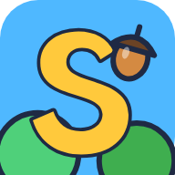

SanökRun
Impressum
Angaben gemäß § 5 Digitale-Dienste-Gesetz (DDG)
Sascha Belon
[Straße und Hausnummer]
[PLZ Ort], Deutschland
E-Mail: saschabelon@gmail.com
Webseite: saschabelon.vercel.app
SanökRun ist ein kostenloses Hobbyprojekt ohne Werbung und ohne Käufe.
Datenschutzerklärung
Stand: 7. November 2026
1. Verantwortlicher
Sascha Belon, Anschrift siehe Impressum, E-Mail: saschabelon@gmail.com.
2. Kurz gesagt
- Keine Werbung, keine Analyse- oder Tracking-Dienste, keine Cookies.
- Keine Inhalte von Drittanbietern: Schriften, Grafiken und Töne werden von unserem eigenen Server geladen.
- Spielstand und Einstellungen bleiben auf deinem Gerät.
- An unseren Server geht nur, was für die Rekordliste nötig ist, und nur wenn du deinen Rekord speichern willst oder die Liste ansiehst.
3. Aufruf der Webseite (Server-Logdateien)
Beim Aufruf verarbeitet unser Server technisch notwendig deine IP-Adresse, Datum und Uhrzeit, die aufgerufene Datei, den Browsertyp und den Statuscode, um das Spiel auszuliefern und Angriffe abzuwehren. Rechtsgrundlage ist Art. 6 Abs. 1 lit. f DSGVO (berechtigtes Interesse an einem sicheren, funktionierenden Angebot). Der Spielserver selbst schreibt keine Zugriffsprotokolle; technisch bedingte Protokolle werden nach spätestens 7 Tagen gelöscht.
Der Server steht in Deutschland bei der Hetzner Online GmbH, Industriestr. 25, 91710 Gunzenhausen, die in unserem Auftrag tätig ist (Auftragsverarbeitung nach Art. 28 DSGVO).
4. Speicherung auf deinem Gerät
Das Spiel speichert im lokalen Speicher deines Browsers (localStorage): deine Einstellungen (Sprache, Ton, Effekte, Held), deinen Fortschritt (Bestweite, Münzkasse, Aufgaben, Level, Outfits, erreichte Welten), den zuletzt benutzten Spitznamen und eine zufällige Geräte-Kennung. Diese Daten verlassen dein Gerät nicht, außer wie in Punkt 5 beschrieben. Die Speicherung ist für das von dir gewünschte Spiel unbedingt erforderlich (§ 25 Abs. 2 Nr. 2 TDDDG). Du kannst alles löschen, indem du die Website-Daten im Browser löschst.
Wenn du das Spiel auf dem Startbildschirm installierst, speichert ein Service Worker die Spieldateien, damit es auch ohne Internet läuft. Dabei werden keine personenbezogenen Daten gespeichert.
5. Rekordliste
Beim Ansehen der Rekordliste wird die zufällige Geräte-Kennung mitgeschickt, damit deine eigenen Einträge markiert werden können.
Wenn du einen Rekord speicherst, übermitteln wir: den Spitznamen, den du eingibst, den Helden, die Weite, die Münzen, die Dauer des Laufs und die Geräte-Kennung. Öffentlich sichtbar sind nur Spitzname, Held, Weite und Platz. Bitte verwende einen Spitznamen und nicht deinen echten Namen.
Zum Schutz vor Missbrauch (zu viele Einträge) wird deine IP-Adresse nur als verschlüsselter Prüfwert (Hash mit wechselndem Zufallswert) im Arbeitsspeicher verwendet, höchstens eine Stunde lang. Sie wird nicht auf der Festplatte gespeichert.
Rechtsgrundlage ist Art. 6 Abs. 1 lit. b DSGVO (die von dir gewünschte Teilnahme an der Rekordliste) und lit. f (faire Rekordliste ohne Missbrauch). Gespeichert werden die 500 besten Läufe aller Zeiten und die Läufe des aktuellen Tages; alle anderen Einträge werden nach dem Tageswechsel automatisch gelöscht. Auf Wunsch löschen wir deine Einträge jederzeit: schreib uns einfach eine E-Mail mit deinem Spitznamen.
6. Teilen
Das Bild zum Teilen wird auf deinem Gerät erstellt. Wenn du es teilst, übergibt das Spiel es an die Teilen-Funktion deines Geräts; wohin du es schickst, entscheidest du. Wir erhalten davon nichts.
7. Kinder
Das Spiel ist für alle Altersgruppen gedacht und fragt keine echten Namen, E-Mail-Adressen oder Fotos ab. Eltern können sich jederzeit an uns wenden, um Einträge ihres Kindes löschen zu lassen.
8. Deine Rechte
Du hast das Recht auf Auskunft (Art. 15 DSGVO), Berichtigung (Art. 16), Löschung (Art. 17), Einschränkung der Verarbeitung (Art. 18), Datenübertragbarkeit (Art. 20) und Widerspruch gegen Verarbeitungen auf Grundlage von Art. 6 Abs. 1 lit. f (Art. 21). Schreib uns dafür eine E-Mail. Außerdem kannst du dich bei einer Datenschutz-Aufsichtsbehörde beschweren, zum Beispiel in dem Bundesland, in dem du wohnst (Liste der Behörden).
Privacy (English summary)
The German text above is the binding version. In short:
- No ads, no analytics, no tracking, no cookies, no third-party content.
- Settings and progress stay in your browser (localStorage), together with a random device ID. Clear the site data to delete them.
- The web server processes your IP address to deliver the game; the game server keeps no access log, and technical logs are deleted after 7 days at the latest. Hosting: Hetzner Online GmbH, Germany.
- Saving a record sends your nickname, hero, distance, coins, run time and the random device ID. Only nickname, hero, distance and rank are public. Please use a nickname, not your real name.
- Your IP address is used only as a salted hash in memory for rate limiting, for at most one hour, and never stored on disk.
- We keep the top 500 runs and today's runs; others are removed the next day. Email us to have your entries deleted.
- Controller and contact: Sascha Belon, saschabelon@gmail.com. You have the rights under Articles 15 to 21 GDPR and may complain to a data protection authority.
Lizenzen / Licences
© 2026 Sascha Belon. Spiel, Name, Logo, Grafiken, Musik und Töne: alle Rechte vorbehalten. Game, name, logo, art, music and sounds: all rights reserved.
Das Spiel nutzt diese freie Software und Schriften / The game uses this open-source software and these fonts:
- three.js, © 2010–2026 three.js authors, MIT License
- Lilita One, © Juan Montoreano, SIL Open Font License 1.1
- Nunito, © The Nunito Project Authors, SIL Open Font License 1.1
- Rubik, © The Rubik Project Authors, SIL Open Font License 1.1
- Fonts packaged by Fontsource (MIT)
Licence texts: MIT, SIL OFL 1.1.